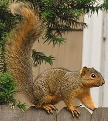
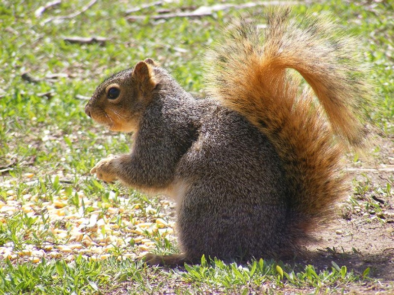
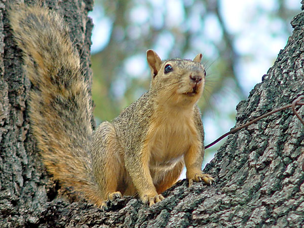

Squirrels
This page might seem random as well, but if you ask my siblings I've had a love for squirrels for quite a while (I don't remember why, though...).
Fox Squirrel
Fox squirrels can be found primarily on the eastern half of the United States. They have reddish gray and pale brown fur (reminiscent of fox fur). Fox squirrels actually spend a decent amount of time on the ground (instead of in trees as most people commonly think of squirrels). They tend to prefer places where woodlands and open fields come together.
  